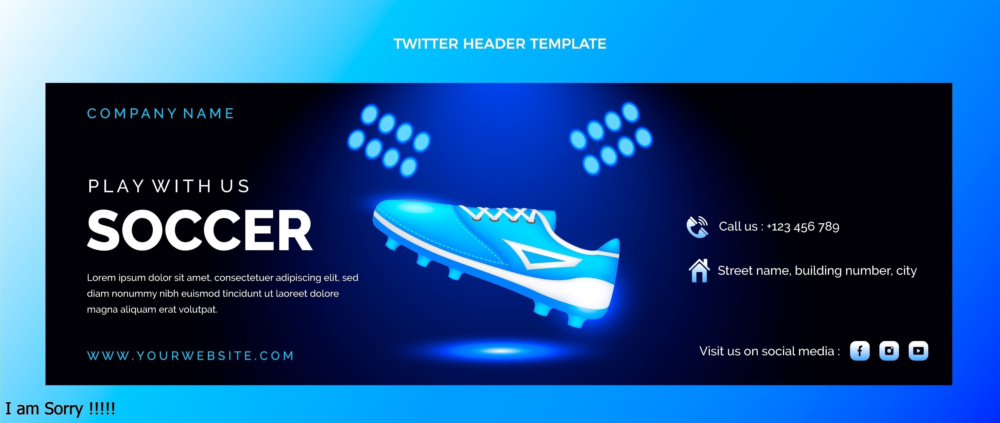

Descubre la última línea de Nike con amortiguación avanzada y diseño aerodinámico. ¡Experiencia de confort y rendimiento sin igual!
Tecnología y Diseño Avanzados
¡Descubre la última innovación en calzado deportivo con la nueva línea de Nike en I-Run! Presentamos nuestras zapatillas más avanzadas, diseñadas para llevar tu rendimiento al siguiente nivel.
La tecnología de vanguardia y el diseño aerodinámico se combinan para ofrecer una comodidad inigualable y un soporte excepcional durante cualquier actividad. Cada par está equipado con características únicas como amortiguación avanzada, materiales transpirables y una suela de alta tracción que asegura un agarre firme en todas las superficies. No solo te invitamos a experimentar una nueva dimensión en el confort y el estilo, sino a unirte a la revolución en el mundo del deporte.
¡No esperes más y sé uno de los primeros en probar la innovación que está marcando tendencia!
| ÚLTIMOS LANZAMIENTOS DE COLABORACIONES | PRECIO | STOCK | |
|---|---|---|---|
| ZAPATILLAS SUPERSTAR XLG HELLO KITTY | S/ 529 | AGOTADO | |
| ADIDAS FORUM LOW CL W | S/ 729 | EN STOCK | |
| ZAPATILLAS DIME STAN SMITH | S/ 429 | EN STOCK |
Inicialmente, en esta escuela se atendía la educación primaria. Fue un inicio muy humilde, en aulas precarias construidas de adobe con mobiliario bastante artesanal; gradualmente, dichas aulas fueron derruidas para construirlas con material noble.
Èstos bienes fueron construidos gracias a la iniciativa y organización de los profesores, colaboración de los padres, alumnado en faenas laboriosas; puesto que se acarreaba material desde el río Rímac de cuyos recuerdos aún queda el actual laboratorio.
Con el paso de los años, se incrementó al nivel secundario con la Resolución directoral departamental de ampliación de servicio N° 0831 del 06 de abril del presente año y también mejoró su infraestructura gracias a la gestión de profesores, padres y gobierno.
En I-Run, nos enorgullece ofrecer zapatillas que combinan estilo y tecnología. Cada modelo está diseñado con materiales de alta calidad para asegurar durabilidad y confort en cada paso. ¡Descubre cómo la innovación transforma tu experiencia de correr!
Nuestra nueva colección de verano presenta diseños frescos y colores vibrantes. Confeccionadas para maximizar la ventilación y el confort, estas zapatillas están perfectas para tus entrenamientos al aire libre o para lucir a diario.
Comprometidos con el medio ambiente, en I-Run utilizamos materiales reciclados y procesos de fabricación sostenibles. Cada compra contribuye a un futuro más verde, sin comprometer la calidad ni el estilo de nuestras zapatillas.
Ofrecemos una experiencia de compra única con opciones de personalización. Elige los colores, materiales y detalles que mejor se adapten a tu estilo y necesidades. ¡Haz que tus zapatillas sean tan únicas como tú!
Nuestro equipo de atención al cliente está siempre listo para ayudarte. Desde la selección de productos hasta la resolución de dudas post-compra, estamos aquí para asegurar que tu experiencia con I-Run sea impecable.
Mantente al tanto de nuestros eventos y colaboraciones especiales. I-Run se une a atletas y diseñadores para crear ediciones limitadas y lanzamientos exclusivos que no querrás perderte. ¡Sigue nuestras novedades y únete a la comunidad I-Run!